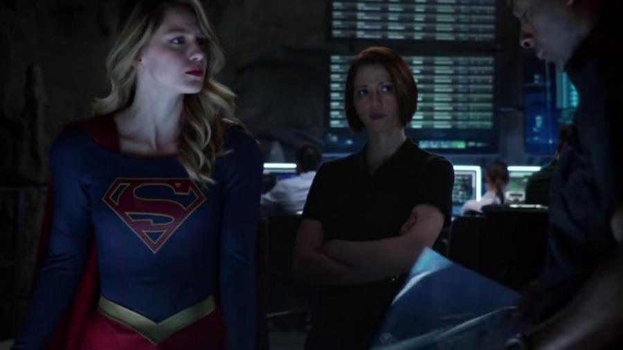

Supergirl S01|E02 Stonger Together
Well, anyone complaining that they didn’t say “Superman” enough in the pilot should certainly have nothing to complain about this time. Supergirl’s second episode is a marked improvement on the first, offering up interesting motivations for familiar characters, some spectacular effects, and surprisingly powerful emotions. “Stronger Together” is somewhat of a logistics episode; it addresses lots of lingering questions that come with the modern age of superheroes. Why does a goofy secret identity still work? How do superheroes pay rent? Why don’t super-strong heroes ever really learn to fight? What happens after a superhero lands a plane in the middle of a river and leaves it there? This episode handles all of that deftly, putting those (admittedly inconsequential) issues to rest with a few swift lines of dialogue and a training montage or two.
There’s a lot of great character building in “Stronger Together” not only for Kara but also James and Cat. Supergirl’s take on Jimmy Olsen is particularly strong, giving him the drive to try and make a name for himself without having to rely on Superman. It makes his move to National City sensible (and maybe his Insistence at being called “James” too), but it also sheds light on the character quite a great deal. Much like Kara, he doesn’t feel as though he can possibly live up to the expectations set upon him by the Man of Steel. Making them kindred spirits makes a lot of sense – and makes for an interesting potential romance, as glimpsed ever so slightly in this episode.

Speaking of which, there’s a lot of great stuff in this episode for the comic fans. Not only are there many Superman name drops, there’s also mention of Lois Lane and Clark Kent, a Fortress of Solitude reference, the introduction of Kryptonite, our first glimpse at Maxwell Lord, and a pretty strong tease at Hank Henshaw’s potential villainous future. It’s very cool to see Supergirl dropping easter eggs so liberally, particularly after all of the obviously unsubstantiated online hoopla about how the show was skirting around such things.
“Stronger Together” is a great episode that gives us less of the stuff we didn’t love about the pilot and plenty more of the stuff we did. The show’s takes on Kara, Cat, and James are inventive and appealing, while the action remains fun and there are easter eggs aplenty. Also: was that Perd Hapley as the TV anchor?!
Next weeks episode preview: